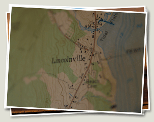

Directions to Lincolnville Beach (44.284752, -69.007359)
The Maine Beach Cottage Inn is ideally located on the shores of Penobscot Bay in the Mid-Coast Region of Maine. We are 6 miles north of Camden and 10 miles south of Belfast in the village of Lincolnville Beach. You'll find us conveniently located within an hour of both the Bangor and Augusta airports, an hour and a half from the Portland Jetport and just 3.5 hours from Boston.
From Augusta State Airport AUG
Augusta is the Maine State Capital. An hour and a quarter by car will bring you through small rural communities that most visitors seldomly see. Stop off along the way to visit the Union Town Center, or get away from Route 17 and take the back roads to get a taste of what Maine tucks away in its hills and fields.
Get DirectionsFrom Bangor International Airport BGR
Bangor offers the most economical option with respect to driving time and allows anyone new to Maine to peruse the Penobscot Marine Museum in Searsport or the various shops and waterfront Belfast on the way down to Lincolnville Beach. If you're pressed for time and there isn't much traffic you're likely to make it here in under an hour.
Get DirectionsFrom Portland International Jetport PWM
Portland is Maine's largest city and home to a vibrant historical district. Hidden away on its cobble stone streets are shops and restaurants in some of the city's oldest warehouses. While the drive can be a bit cumbersome at just under 2 hours, you're certain to see some of Maine's most popular towns, including Freeport, Bath, and Rockland.
Get DirectionsFrom Boston Logan Airport BOS
Logan airport is the nearest major airport to Lincolnville - located just 3.5 hours south in Boston, Massachusetts. While driving north, you'll be afforded the opportunity to stop in Portsmouth, Kittery, Kennebunkport, Portland and many of the other Mid-Coast towns.
Get Directions